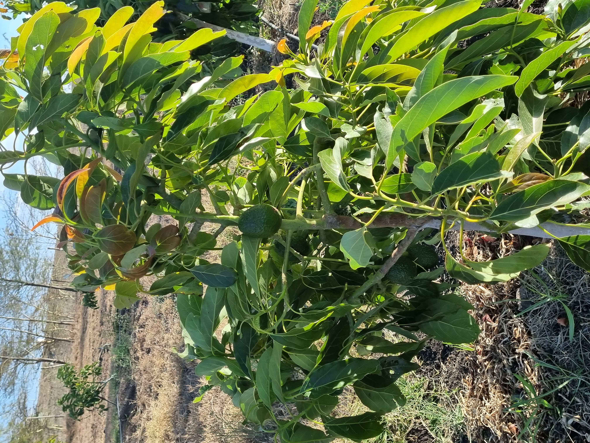

Projects Undertaken
As part of my training on coding, i have worked on a couipleof projects. I have shared links to Hithub where the projects are stored. These are very basic in nature for a start and will keep adding more projects with advanced features as learning continues.
Readme
The Readme project introduces the concept of documenting an overview of the project. It is normally the first document that someone reads to have an idea of the project.Please find my project file here. this document is prepared using markdown
My first website
My first website project is my introductory training to html. It consist of html files, images in a folder and a css folder with a style sheet. It also includes a Readme file. It gives an idea of where this journey as started. You may veiw it on Github from here. This project is prepared using HTML.
Branching website
The branching site project introduces concepts of branching in Github. This provide the foundation of future projects since we will be using Github as our repository. You may have a feel of this project from here. This project is prepare using HTML.
HTML
HTML is the language used for building websites. The first introductory lessons can be seen on this project link at this location. Feel free to review how far we have come
Media query
This is a project that introduces concepts of responsive web design. This enables altering the appearance of a website depending on the device used to view it. Please click here to get a feel of the project. HTML has been used for this project
Current Interests
My current interests spans across the three broad categories below:
Travel
I love travel and do make an effort to visit a new place once a year. The focus of travel is slef drive overlanding. This creates huge opportunity for camping and a variety of locations in addition to normal hotels

Sports
Sporting activities are good for keeping the body healthy. My interest is outdoor activities which includes walking, hiking and jogging. I take time with my wife to get active for an hour three days in a week.
Farming
I have an interest in farming. I have been involved in growing vegetables but are now putting a focus on fruit farming. Please see sample fruit trees on the farm
